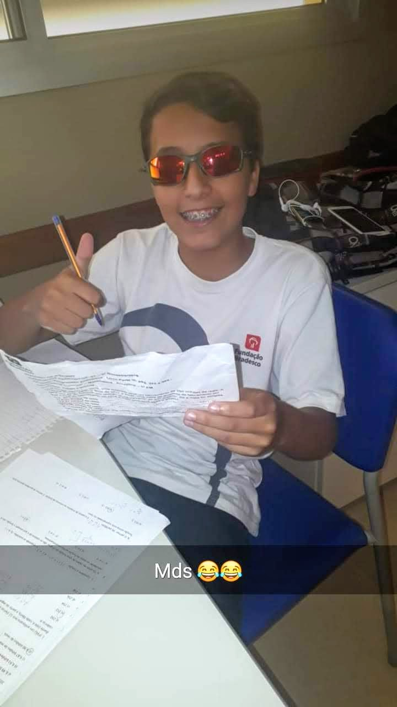
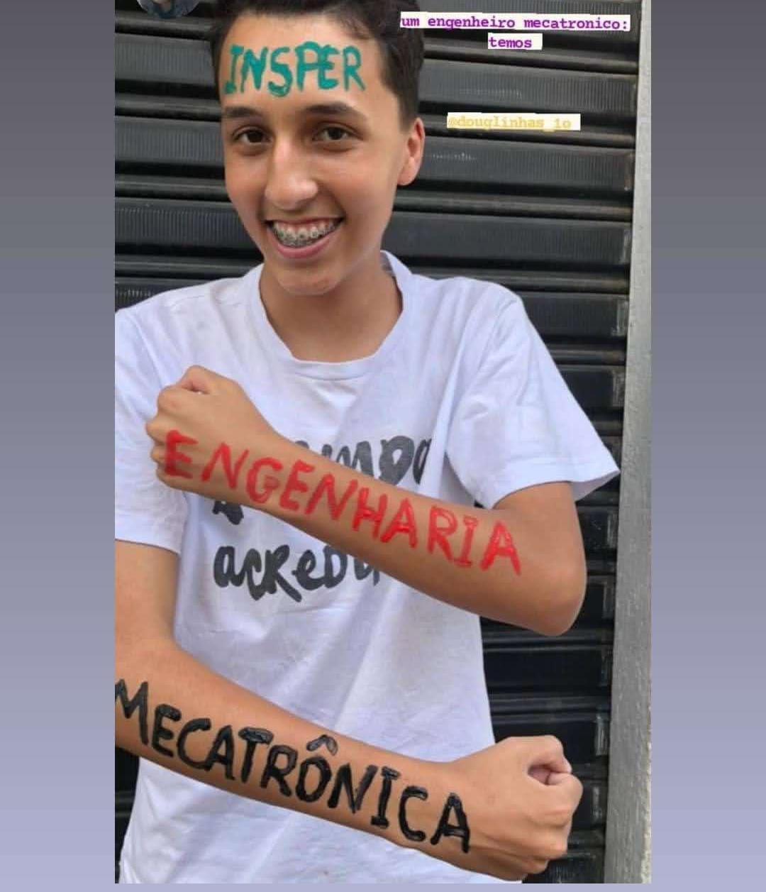
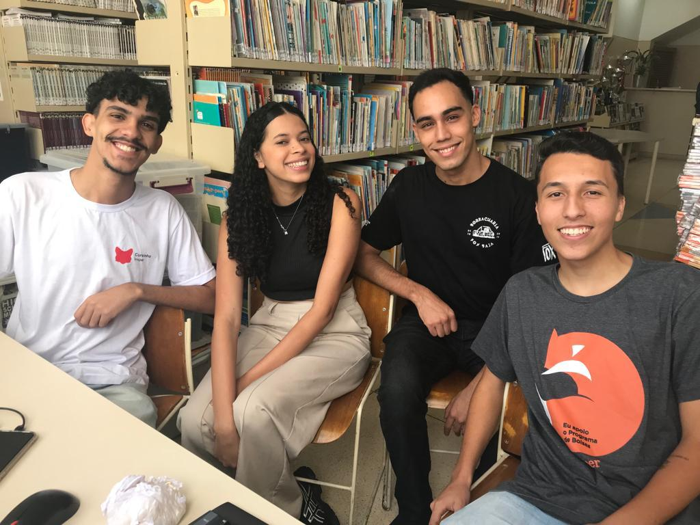

A tabela abaixo discrimina os custos estimados para 7 meses em Paris
Hi, let me share a little bit of my story!
A few things about me
Hello! I'm Douglas Bracale, a Computer Engineering student on a full scholarship at Insper. I was born in Palmas-TO and have a deep passion for technology and technical development, with experience in academic competitions and international research.
Very soon, I will begin an academic exchange program at the Southern Denmark University School of Management in France, where I aim to complement my technical background with leadership and business skills. This exchange will be a valuable opportunity to broaden my horizons and acquire the knowledge needed to succeed as an entrepreneur in the future.
As this is a bilateral exchange program, the costs related to the partner university are already covered. Additionally, I receive a cultural scholarship from Insper's scholarship program, of which I am a beneficiary. However, this amount is not sufficient to cover all the other expenses required to live a semester abroad and experience the cultural exchange, which is a mandatory component of this scholarship. Therefore, this campaign aims to raise the necessary funds to cover additional costs such as airfare, food, housing, and other related expenses.
My Story
Childhood: I was born and raised in a community in Osasco, São Paulo, in a simple environment, yet filled with strong values, affection, and dedication. My father, a hardworking and committed cook, always did everything he could to ensure we never lacked anything at home. My mother, a tireless nursing technician when it came to my education, fought hard to get me a spot at a private non-profit school, Fundação Bradesco. She always encouraged me to never give up on my dreams and gave me all the support I needed. From an early age, I learned the value of effort, discipline, and perseverance from my parents. I was a very curious child, passionate about sports, especially soccer. I trained at a community sports association and even participated in tournaments. Despite a busy routine, I always took my studies seriously, understanding early on that education would be the key to changing my reality. I was always fascinated watching my father fix things around the house. He did it with such ease and ingenuity that it sparked in me a deep curiosity about how things worked. Without realizing it, that was when the spirit of a future engineer was born. Although my father only studied up to the 8th grade, as he had to start working at a very young age, to me he has always been , and still is , the greatest engineer of all time. His problem-solving skills, practical intelligence, and dedication to our family became examples that marked my childhood and shaped the way I see the world. He has always been my role model and remains my biggest inspiration. That stage of my life was essential in shaping who I am today: a determined, resilient person with a strong sense of responsibility. Every lesson learned, every challenge overcome, and every achievement back then built the foundation of my journey.
High School: High school was the moment when I fully immersed myself in my studies. I decided to pause all extracurricular activities to focus 100% on the upcoming college entrance exams. Every day, I dedicated myself intensely, spending the entire day at school and making the most of its excellent infrastructure. It was during this time that I discovered Insper, and from the very first year, I knew that studying Engineering there was my goal. I’ve always been passionate about hardware and technology, and Insper represented the perfect match for my academic ambitions. I also had a deep interest in History and was given the opportunity to teach it voluntarily in a preparatory course offered at my school. The course was designed for students aiming for the ENEM and other competitive exams. Feeling that I still needed a stronger foundation, I applied and was accepted into the Fundação Getulio Vargas’ popular prep course, which took place all day on Saturdays. That was my first major achievement: studying on a scholarship at such a prestigious institution. One of the biggest challenges came during my third year of high school, when the COVID-19 pandemic began. I had to study every day without rest using my brother’s old and barely functioning computer. Despite all the difficulties, I remained focused. At the end of that year, after much effort and perseverance, I was accepted into Insper. In that moment, I realized that this was the first key to changing not only my life, but also my family’s future.


My Journey at Insper: Getting into Insper was the achievement of a dream built through effort and dedication. In the very first months of the course, I discovered an even deeper passion for technology and knew I was in the right place. Through my classes, I explored areas such as programming, hardware, network architecture, cybersecurity, and web development, all of which sparked my interest and confirmed that I had chosen the right path. The academic environment introduced me to outstanding professionals and brilliant classmates, raising the bar for my learning and aspirations. Studying at an institution with world-class infrastructure, alongside the intellectual elite of São Paulo, gave me a whole new perspective on life. I was exposed to realities far different from the one I grew up in, and that contrast became a powerful motivator to keep pushing forward. One of the most meaningful moments of my journey was being invited by the director of Fundação Bradesco to return to my former school and give a talk. I shared my story with students who, like me, come from underprivileged backgrounds, encouraging them to believe in their potential and aim for top-tier universities. It was an emotional and rewarding experience that strengthened my sense of purpose. As I approached the final stretch of my degree, I secured an internship at Simpala Financeira, working in the IT department. It was an incredible opportunity where I gained real-world experience, built relationships with amazing people, and deepened my understanding of how technology impacts business. That internship was key to shaping the professional I am becoming. More than just technical knowledge, Insper has given me personal growth, independence, and a strong sense of responsibility. With each project, challenge, and achievement, I continue building not just a career, but a better and stronger version of myself.

Exchange at Southern Denmark University: Growing up in a humble community in Osasco, São Paulo, taught me from an early age to pursue opportunities that could transform my reality. Studying at Fundação Bradesco was the first major step. Being accepted into Insper, through hard work and determination, was the second. Now, as I reflect on my journey, I feel ready to take another important leap: experiencing an international exchange that will broaden my worldview and prepare me to generate even greater impact. Participating in the exchange program at the Southern Denmark University represents a natural continuation of the path I’ve been building. Internationally recognized for its excellence in innovation, leadership, and the development of sustainable solutions, SDU offers the ideal environment to deepen both my technical and human skills. Immersing myself in a collaborative, multicultural academic culture , alongside students and professors with global perspectives , will allow me to break barriers not only geographically, but also intellectually and personally. More than just an exchange, I see this opportunity as a transformation. Living and learning in one of Europe’s top institutions for technology and business will strengthen my ability to think strategically, lead purposeful projects, and connect my passion for hardware, cybersecurity, and development with solutions that generate real value. Just as I was invited to return to Fundação Bradesco to inspire students from similar backgrounds, I want to bring back new perspectives to empower communities like the one I grew up in , showing them it’s possible to dream big and achieve it. The experience at Southern Denmark University will undoubtedly be a turning point in my academic and personal journey. I carry with me the values, resilience, and purpose that shaped me , and I return with even more tools to transform not only my own path, but also the world around me.

CUSTOS TOTAIS ESTIMADOS
| Descrição | Mensal (DKK) | Mensal (€) | Mensal (R$) | Total 6 meses (DKK) | Total 6 meses (€) | Total 6 meses (R$) |
|---|---|---|---|---|---|---|
| Moradia | 3.800 | 509,83 | 3.134 | 22.800 | 3.058,98 | 18.806 |
| Alimentação | 1.700 | 228,49 | 1.402 | 10.200 | 1.370,96 | 8.412 |
| Transporte | 300 | 40,32 | 247 | 1.800 | 241,91 | 1.482 |
| Despesas pessoais | 500 | 67,20 | 412 | 3.000 | 403,19 | 2.474 |
| Plano de celular | 150 | 20,16 | 124 | 900 | 120,96 | 742 |
| Total custos mensais | 6.450 | 865,99 | 5.319 | 38.700 | 5.195,00 | 31.916 |
| Seguro saúde | --- | --- | 643 | 780 | 104,88 | 643 |
| Visto | --- | --- | 1.558 | 1.890 | 254,40 | 1.558 |
| Passagens aéreas | --- | --- | 5.359 | 6.500 | 873,60 | 5.359 |
| Total despesas únicas | --- | --- | 8.797 | 10.670 | 1.434,48 | 8.797 |
| Total geral | --- | --- | 44.983 | 49.370 | 6.629,48 | 44.983 |
Thank you for considering donating! Updates to the donation progress are made manually as I receive contributions. Automating this process would require purchasing payment systems, which would increase the campaign costs. I appreciate your understanding! Obrigado por considerar doar! As atualizações no gráfico de doações são feitas manualmente à medida que recebo as contribuições. Automatizar esse processo exigiria a compra de sistemas de pagamento, o que aumentaria os custos da campanha. Agradeço pela compreensão!
Última atualização: dd/mm/aaaa às hh:mm.
Meta da campanha: R$ 44983.00
Valor arrecadado: R$ 0
Valor faltante: R$ 44983.00
Taxa Final (EUR/BRL + 1.1%IOF + 0.9%Câmbio): R$ 6.48
How to Donate Como Doar
PIX QRCODE PIX QRCODE
PIX Key Chave PIX
douglasnointercambio@gmail.com
Key copied! Chave copiada!
TEDTED
- Banco Nubank Agência: 0001 | Conta: 37496409-7
Thank you for considering donating! Each contribution helps make this exchange program a reality and brings me closer to achieving my academic and professional goals. Obrigado por considerar doar! Cada contribuição ajuda a tornar este programa de intercâmbio uma realidade e me aproxima de alcançar meus objetivos acadêmicos e profissionais.
Entre em Contato
Sinta-se à vontade para entrar em contato pelo WhatsApp, e-mail, LinkedIn ou Instagram.
+55 11 969801425
Iniciar Chat no WhatsApp
douglaspbc@al.insper.edu.br
Enviar Email
linkedin.com/in/douglasbracale/
Ver Perfil no LinkedIn
instagram.com/douglas_bracale/
@douglas_bracale